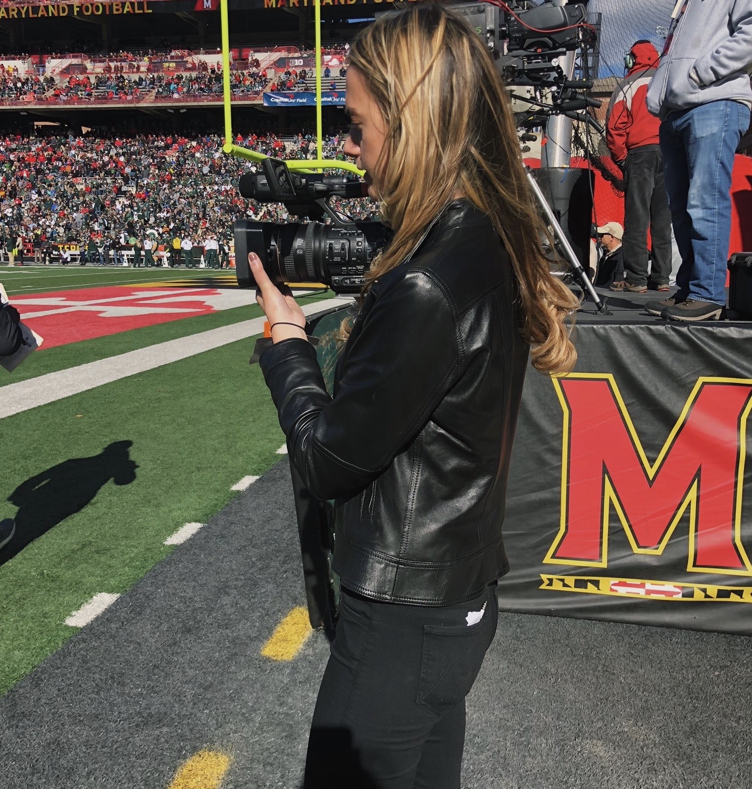

Skills


PROFESSIONAL EXPERIENCE
Production Intern
Rachael Ray Show (New York, NY)
2019 Summer
Write and pitch show content to producers at Rachael Ray. Perform daily tasks such as covering the receptionist, answering phone calls, handling all mail, and executing runs as requested.
Intern
The Levinson/Fontana Company (New York, NY)
2019 Summer
Oversee front desk, read coverage, proof scripts, and perform basic administrative tasks at Tom Fontana’s office.
Research Intern
Digital Hollywood (New York, NY)
2018 Summer
Assisted with organization and conducted research for Food Technology conference coordinated by trade show company.
Actress
Summit Entertainment
2006-2010
Acted in two Summit Entertainment films. Played supporting roles in Step Up and Remember Me.
BROADCAST EXPERIENCE
Reporter, Anchor, Producer
The Left Bench TV
2017-Present
On-air reporter of University of Maryland athletic teams for campus sports media outlet. Shoot events with a broadcast camera, conduct post-game interviews, and edit using Premiere Pro. Anchor and produce bi-weekly studio show.
Reporter, Video Editor
Testudo Times
2019-Present
On-air reporter for sports media outlet covering the University of Maryland Men’s Basketball team. Film games, attend press conferences, and produce highlight videos on a tight deadline.
Crew Member
Capital News Service
2018-Present
Work behind the scenes at Maryland’s live newscast. Floor Direct, control audio, operate broadcast cameras, shadow main director, and assist wherever else necessary.
Reporter
WMUC Sports Radio
2017
Broadcasted University of Maryland women’s volleyball games for campus radio station. Covered games with on air play-by-play and color commentating.